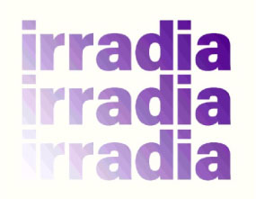

<div id="p8" class="page header">
  <div class="perspected">
    <div class="overlayer triggerFunction showing" rel="#p8"></div>
    <h1 class="title-normal" rel="#p8">
      
      <div class="title center">
        <span>7</span>
        <p class="black" data-translatable><span>CREDITS</span><span>CRÉDITOS</span></p>
      </div>
    </h1>
    <span class="closer">
      
    </span>
    <div class="no-visible">
      <div class="box-shadow">
        <div class="pl-15 pr-15 pt-20 mb-100">
          <div class="center">
            <div class="text-center pb-30">
              
            </div>
            <p class="text-3 pb-80">
              Irradia. Arte + Tecnología. Proyecto que utiliza los medios de
              producción digital como fuente de inspiración y estímulo para la
              creación artística, incentivando el uso de herramientas inmersivas y
              la exploración de nuevos lenguajes audiovisuales. Este programa, que
              tendrá lugar en el vestíbulo principal del MALI, propone una
              relación más dinámica entre el espectador y el espacio expositivo,
              interconectado los límites entre el espacio imaginario y físico.
            </p>
            <div class="box-img">
              <div class="box-img--item">
                
              </div>
            </div>
            <div class="text-center pt-50">
              <div>
                <p class="m-0 text-decoration">Espacio fundación telefónica</p>
                <p class="m-0">Elizabeth Galdo Marin</p>
                <p class="m-0">Lucía García de Polavieja</p>
                <p class="m-0">Reina Jara</p>
                <p class="m-0">Omar Lavalle</p>
                <p class="m-0">Jose Carlos Goytizolo</p>
                <p class="m-0">Juanita Gabriel</p>
              </div>
              <div class="mt-20">
                <p class="m-0 text-decoration">Museo de Arte de Lima - MALI</p>
                <p class="m-0">Sairah Espinoza</p>
                <p class="m-0">Sharon Lerner</p>
                <p class="m-0">José Carlos Mariátegui</p>
                <p class="m-0">Patricia Villanueva</p>
              </div>
              <div class="mt-20">
                <p class="m-0 text-decoration">Diseño web</p>
                <p class="m-0">Michael Prado</p>
              </div>
              <div class="mt-20">
                <p class="m-0 text-decoration">Programación web</p>
                <p class="m-0">Lucuma Labs</p>
              </div>
              <div class="mt-20">
                <p class="m-0 text-decoration">Producción podcast</p>
                <p class="m-0">Renzo Belón</p>
              </div>
              <div class="mt-20">
                <p class="m-0 text-decoration">Asesoría musical & Paisaje sonoro podcasts</p>
                <p class="m-0">Teté Leguía</p>
              </div>
              <div class="mt-20">
                <p class="m-0 text-decoration">Locución</p>
                <p class="m-0">Micky Bane</p>
              </div>
              <div class="mt-20">
                <p class="m-0 text-decoration">Diagramación partitura</p>
                <p class="m-0">Natalia Revilla </p>
              </div>
              <div class="mt-20">
                <p class="m-0 text-decoration">Traducción</p>
                <p class="m-0">Julia Branco</p>
                <p class="m-0">Max Hernández Calvo</p>
                <p class="m-0">Denisse Martínez</p>
                <p class="m-0">Robin Myers</p>
                <p class="m-0">Servidioma</p>
              </div>
              <div class="mt-20">
                <p class="m-0 text-decoration">Fotografía de faros</p>
                <p class="m-0">José Balta</p>
              </div>
            </div>
          </div>
        </div>
        
        <div class="center">
          <p class="text-1" data-translatable>
            <span>All the lighthouses of the peruvian coast is part of the Irradia project,
              a joint initiative of MALI and the Fundación Telefónica Movistar to
              promote the use of digital means of production as
              encouragement for artistic creation.</span>
            <span>Todos los faros de la costa peruana forma parte del proyecto Irradia,
              una iniciativa conjunta del MALI y la Fundación Telefónica Movistar
              para promover la utilización de los medios de producción digital como
              estímulo para la creación artística.</span>
          </p>
        </div>
      </div>
      <div class="box-shadow pl-15 pr-15 pt-30 pb-80">
  <div class="center">
    <p class="m-0 text-2 list-nav-title-text" data-translatable><span>ALL THE<br /> LIGHTHOUSES OF THE<br /> PERUVIAN
        COAST</span><span>TODOS LOS<br /> FAROS DE LA COSTA<br /> PERUANA</span></p>
    <p class="m-0 text-2">Luz María Bedoya</p>
    <ul class="list-nav">
      <li>
        <a class="linktopage" rel="#p2">
          <span>1</span>
          <p data-translatable><span>PRESENTATION</span><span>PRESENTACIÓN</span></p>
        </a>
      </li>
      <li>
        <a class="linktopage" rel="#p3">
          <span>2</span>
          <p data-translatable><span>LIGHTHOUSES</span><span>FAROS</span></p>
        </a>
      </li>
      <li>
        <a class="linktopage" rel="#p4">
          <span>3</span>
          <p data-translatable><span>NAVIGATION</span><span>NAVEGACIÓN</span></p>
        </a>
      </li>
      <li>
        <a class="linktopage" rel="#p5">
          <span>4</span>
          <p data-translatable><span>SHEET MUSIC</span><span>PARTITURA</span></p>
        </a>
      </li>
      <li>
        <a class="linktopage" rel="#p6">
          <span>5</span>
          <p data-translatable><span>INTERPRETATIONS</span><span>INTERPRETACIONES</span></p>
        </a>
      </li>
      <li>
        <a class="linktopage" rel="#p7">
          <span>6</span>
          <p>PODCASTS</p>
        </a>
      </li>
      <li>
        <a class="linktopage" rel="#p8">
          <span>7</span>
          <p data-translatable><span>CREDITS</span><span>CRÉDITOS</span></p>
        </a>
      </li>
      <li>
        <a class="linktopage" rel="#p9">
          <span>8</span>
          <p data-translatable><span>ACKNOWLEDGMENTS</span><span>AGRADECIMIENTOS</span></p>
        </a>
      </li>
    </ul>
  </div>
</div>
    </div>
  </div>
</div>